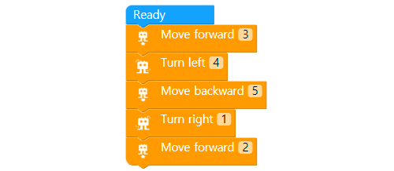

Memerintahkan robot untuk berjalan
• Perintahkan AsomeBot berjalan maju, mundur, kiri, dan kanan.
• Pelajari cara agar robot untuk menunggu selama detik yang ditentukan.
A. Bagaimana AsomeBot berjalan?
Pikirkan tentang bagaimana kaki Anda bergerak ketika Anda berjalan. Seperti manusia, AsomeBot berjalan dalam empat gerakan berbeda untuk mengambil satu langkah.


① angkat kaki kiri ② kaki kiri ke depan

③ angkat kaki kanan ④ kaki kanan ke depan
B. Perintah tunda (delay)
Dengan menambahkan blok Delay setelah blok Ready, robot akan menunggu selama waktu yang ditentukan sebelum blok berikutnya dijalankan. Untuk membuat robot berjalan dalam gerakan yang diinginkan tanpa kabel USB, buat waktu tunda dengan menambahkan blok Delay setelah blok Ready.

A. Bergerak maju – move forward (Grup WALK)
Berjalan maju dengan jumlah langkah yang ditentukan sebagai parameternya.
Masukkan angka ke langkah-langkah untuk bergerak maju setelah mengklik. Satu langkah bergerak kaki kiri dan kanan sekaligus

• Buat program blok-coding yang membuat AsomeBot siap dan berjalan maju tiga langkah. Periksa seberapa jauh AsomeBot berjalan.
B. Bergerak mundur – move backward (Grup WALK)
Berjalan mundur dengan sejumlah langkah yang ditentukan.

Masukkan jumlah langkah untuk mundur setelah mengklik. Satu langkah bergerak kaki kiri dan kanan sekaligus.
• Buat program blok-coding yang membuat AsomeBot siap dan berjalan mundur tiga langkah. Periksa seberapa jauh AsomeBot berjalan.
C. Belok Kiri – turn left (Grup WALK)
Belok kiri sebanyak yang ditentukan.

Masukkan jumlah langkah yang akan diputar ke kiri setelah mengklik. Untuk memutar 90 derajat, robot harus
• Buat program blokir untuk membuat AsomeBot siap dan belok kiri 3 langkah. Periksa sudut seberapa jauh AsomeBot berbelok ke kiri.
D. Belok Kanan –turn right (Grup WALK)
Belok kanan sebanyak yang ditentukan sebagai opsi.

Masukkan jumlah langkah untuk berputar ke kanan setelah mengklik. Untuk memutar 90 derajat, robot harus berputar 3 hingga 4 kali.
• Buat program blok-coding untuk membuat AsomeBot siap dan untuk berbelok ke kanan 3 langkah. Periksa sudut seberapa jauh AsomeBot berbelok ke kanan.
E. Delay (Grup ADVANCE)
Tunggu hingga jumlah detik yang ditentukan berfungsi.

Masukkan jumlah detik untuk menunggu setelah klik.
① Buat program blok yang membuat AsomeBot bergerak maju 5 langkah, tunggu 3 detik dan berjalan mundur 5 langkah.

② Ketika blok di bawah dijalankan, ke arah mana AsomeBot melihat dan berdiri?

A. Aturan main
① Buat program yang bergerak 30 langkah. (Jika jumlah langkah kecil, tambah jumlah langkah dan tetapkan aturan.)
② Robot-robot dapat pergi ke mana saja di area gambar manik-manik.
③ Robot yang menginjak manik-manik terbanyak adalah pemenangnya. (manik-manik merah 10 poin, manik-manik kuning, 5 poin)
B. Algoritma
① Robot Robot perlu menginjak banyak manik-manik dalam 30 langkah. Atur arah dan mulai posisi untuk menginjak banyak manik-manik merah yang memberikan poin tinggi.
②Periksa berapa langkah yang diperlukan untuk bergerak sebanyak satu kolom manik-manik.
③Buatlah penundaan 5 detik di blok Delay.
④ Buat program untuk memindahkan AsomeBot ke arah yang diinginkan.
C. Mainkan game
Mainkan game dengan teman-teman Anda dan lihat siapa yang terbanyak menginjak manik-manik.